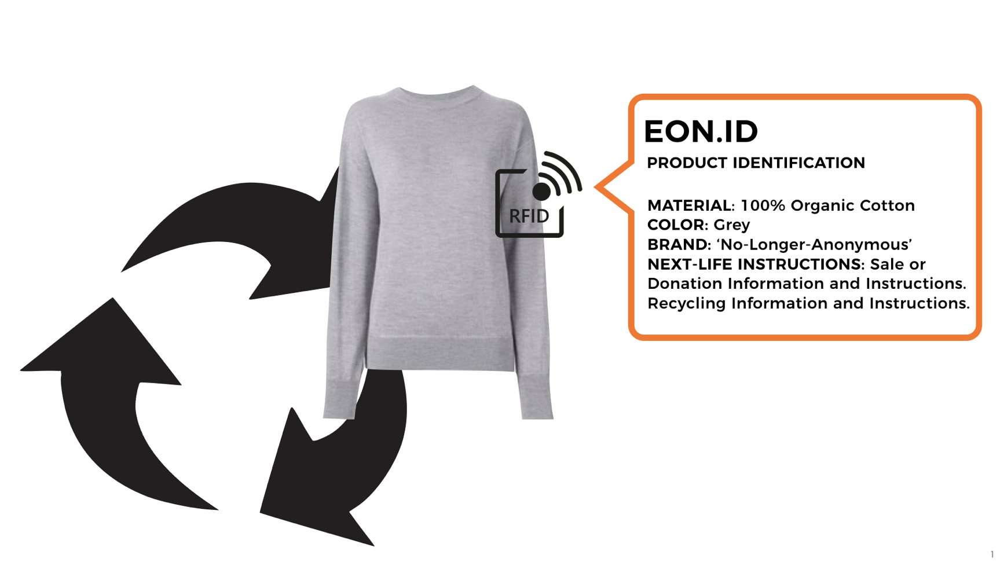
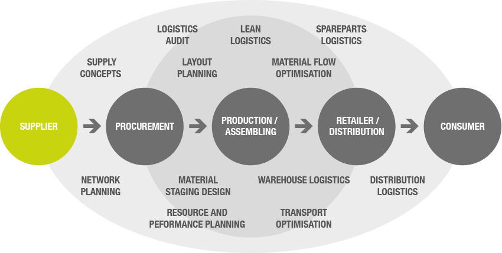
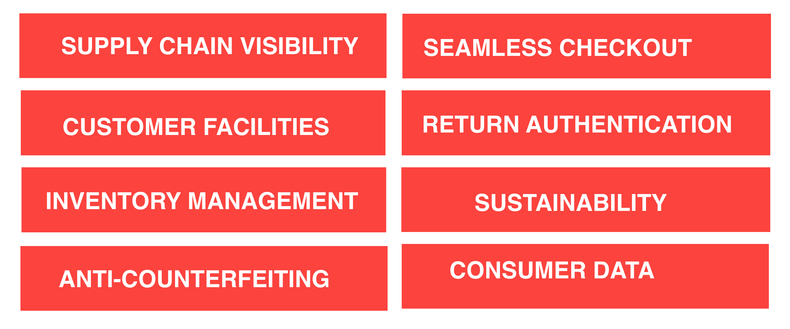

First Global System for Textile Recycling
EON-ID is developing the first global system for textile recycling powered by the internet of things, advancing the circular economy for the entire fashion industry. EON- ID is a system for transforming old clothes into new garments — in a similar way to paper recycling. Today, nearly 90% of unwanted clothes in the United States end up in landfill. If we could instead take these clothes and turn them into new materials and garments, we could eliminate waste, end reliance on new natural resources, and stop the devastating pollution of the fashion industry.
SMART TEXTILES FOR A SUSTAINABLE FUTURE
As we look ahead, the prevalence of connectivity, through the Internet of Things and the creation of ‘intelligent assets’, will accelerate. How can we use these technological advances to enable smarter, more efficient and more sustainable growth ? The Internet of Things is already increasing efficiency in our current supply chain, and it has great potential to enable smarter systems thinking and more responsible lifecycle management. By embedding circular economy principles in smart connected objects, we can not only improve the efficiency of the supply chain, but also the end-of-life processing, and recycling of these objects.
Material Transparency is essential for recycling

“Manual sorting of textiles operates successfully, but at small profit margin because sorting criteria are not aligned with the market for recyclates.”
- WRAP, “Technologies for Sorting End of Life Textiles”, 2014
“Using Radio Frequency Identification Tags (RFID) in sorting apparel and textiles at the end of their lives, will enable the cascade of each type of textile to more suitable and higher-value applications than is the case today."
- WORLD ECONOMIC FORUM, 2016
“RFID tags have great potential for management of product recycling and reuse, and for research on product lifecycles. As a lifecycle management tool, electronic tags could make recycling easier and cheaper, and could facilitate the recovery of economic value from the waste stream. As a research tool, electronic tags have the potential to provide detailed data on product distribution, consumption, use, disposal and recycling.”
- ENVIRONMENTAL PROTECTION AGENCY, 2016
“The modest cost of making and attaching the label that remains readable at end of life… would benefit from a new marketing channel to consumers and corporate social responsibility benefits.”
- WRAP, “TECHNOLOGIES FOR SORTING END OF LIFE TEXTILES”, 2014
RFID to will power transformation in the fashion industry
Item level tagging makes it possible for objects in our physical world to have a digitized identity. In order to manage a materials marketplace, we must be able to track assets and have transparency on material content. Item-level tagging with tags that can survive the entire product lifecycle (certain types of barcode or RFID tag) will power material transparency and recycling at end of life.

